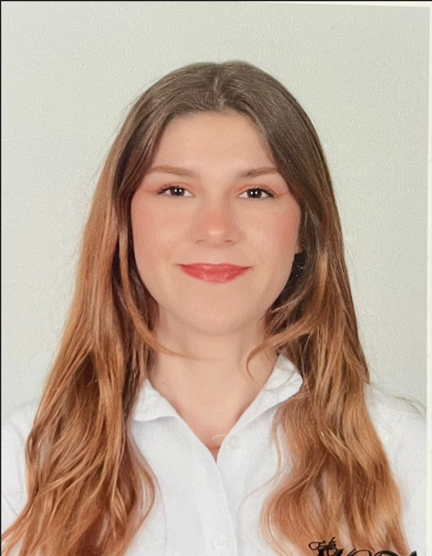

Yapay Zeka, Bulut Bilişim ve Mobil Teknolojilerle yenilikçi çözümler inşa ediyorum.
Kastamonu Üniversitesi
Bilgisayar Mühendisliği
2022-2027

Kastamonu Üniversitesi Bilgisayar Mühendisliği bölümünde eğitimime devam ederken, yazılım dünyasının farklı disiplinlerini bir araya getiren yenilikçi çözümler üretmeye odaklanıyorum. Teorik bilgiyi pratik projelerle desteklemeyi ilke edinerek; yapay zeka, mikroservis mimarileri ve bulut bilişim gibi modern teknolojiler üzerinde yetkinlik kazandım. Kariyer yolculuğumda hem bireysel projelerimle hem de kurumsal staj deneyimlerimle kendimi geliştirdim. Bursa Yenişehir Belediyesi'ndeki stajım sırasında "İyilik Masası" web platformunu full-stack olarak hayata geçirirken; Yazılım XYZ bünyesinde drone görüntülerinden nesne tespiti yapan YOLO tabanlı yapay zeka modelleri ve yüz tanıma sistemleri üzerine çalıştım. Bu süreçte veri ön işleme, model eğitimi ve sistem entegrasyonu aşamalarının tamamında aktif rol alarak teknik becerilerimi güçlendirdim. Projelerimde sadece kod yazmaya değil, sistemin sürdürülebilirliğine ve mimari bütünlüğüne de önem veriyorum. Dağıtık sistemlerde veri tutarlılığını sağlamak adına Saga orkestrasyon desenini kullanarak NestJS ve Flutter tabanlı bir otel rezervasyon sistemi simüle ettim. Ayrıca AWS üzerinde ölçeklenebilir altyapılar tasarlayarak yüksek kullanılabilirliğe sahip sistem mimarileri oluşturma konusunda deneyim edindim. Girişimci ruhumla katıldığım Kastamonu Teknokent "Geleceğe" Girişimcilik Yarışması'nda yazılım tabanlı projemle birincilik ödülüne layık görüldüm. Aynı zamanda topluluk bilinciyle GDSC bünyesinde organizasyonel görevler üstleniyor ve teknik birikimimi Medium üzerinden Python kütüphaneleri ve DevOps konularında yazdığım makalelerle paylaşıyorum. Sürekli öğrenen ve teknolojik dönüşüme öncülük etmeyi hedefleyen bir mühendis adayı olarak, karmaşık problemlere efektif çözümler sunmaya devam ediyorum.
Kurum ve öğrenci bilgilerinin güvenliğini ön planda tutan, kurumların web siteleri üzerinden meşruiyetini doğrulayan ve dağınık haldeki burs fırsatlarını tek bir noktada toplayan, doğrulama ve eşleştirme özelliklerine sahip Flutter tabanlı mobil uygulama projesini tamamladım. Detayları görmek için tıkla...
YOLO ve görüntü işleme tekniklerini kullanarak çocukların çizdiği resimlerdeki nesne konumu, çizim yoğunluğu ve ölçek gibi kriterler üzerinden psikolojik analiz gerçekleştiren bir yapay zeka modeli geliştirdim. Detayları görmek için tıkla...
ONNX ile lokalde çalışan bir yapay zeka ajanı geliştirdim ve n8n kullanarak iş zekası modelinin tüm iş akışı otomasyonunu sağladım. Detayları görmek için tıkla...
Dağıtık mikroservis mimarisinde veri tutarlılığını sağlamak için Saga desenini kullandığım bir sistem simüle ettim; projeyi Flutter (frontend) ve Node.js/NestJS (backend) teknolojileriyle geliştirdim. Detayları görmek için tıkla...
Veritabanı tasarımı, yönetimi ve karmaşık sorgu kayıtları konusunda kapsamlı yetkinlik kazandığım projemin detayları GitHub adresimde yer almaktadır. Detayları görmek için tıkla...
En az üç makine öğrenmesi modelini çapraz doğrulama yöntemi ve F1 skoru, özgüllük gibi metriklerle karşılaştırarak performans analizlerini gerçekleştirdim. Detayları görmek için tıkla...
Görüntü işleme algoritmalarını hem hiçbir hazır kütüphane kullanmadan hem de OpenCV ve NumPy gibi kütüphanelerle geliştirerek performans ve optimizasyon farklarını kıyaslayan bir çalışma yürüttüm.Detayları görmek için tıkla...
AWS üzerinde 2 farklı bölgede (AZ) çalışan, yüksek kullanılabilirliğe sahip VPC altyapısı ve ağ güvenliği katmanları tasarlandı.Application Load Balancer ve Auto Scaling entegrasyonu ile CPU yüküne bağlı olarak otomatik ölçeklenen, dinamik bir sistem mimarisi oluşturuldu. Detayları görmek için tıkla...
ONNX ile lokalde çalışan bir yapay zeka ajanı geliştirdim ve n8n kullanarak iş zekası modelinin tüm iş akışı otomasyonunu sağladım. Detayları görmek için tıkla...
Kastamonu Teknokent tarafından düzenlenen 'Geleceğe' girişimcilik eğitimine katıldım ve yazılım tabanlı girişim fikrimi sundum. Projem jüri tarafından birincilik ödülüne layık görüldü.
Topluluğun yönetim ekibi ve iletişim departmanında görev aldım. Bu süreçte çeşitli etkinlikler düzenledim, organizasyon süreçlerini yönettim ve konuşmacılarla doğrudan iletişim kurarak etkinliklerin başarısını sağladım
Medium üzerinde Python kütüphaneleri ve DevOps konularında teknik makaleler yazıyorum.
Yenişehir Belediyesi için kullanıcıların talep, şikayet ve önerilerini kolayca iletebildiği "İyilik Masası" web platformunu ve yönetim panelini geliştirdim. Kullanıcı dostu bir arayüz tasarladım ve güvenli erişim için e-posta doğrulama sistemini entegre ettim. Projeyi HTML, CSS, PHP ve SQL kullanarak full-stack olarak tamamladım.
Drone görüntülerinde nesne tespiti ve sınıflandırması yapmak amacıyla YOLO modelini kullanarak bir görüntü işleme projesi geliştirdim. Proje; kara araçlarını, yayaları ve deniz araçlarını yüksek doğrulukla birbirinden ayırt edebilmektedir. Ayrıca, projeye özel bir yüz tanıma sistemi entegre ettim; veri seti ön işleme ve model eğitimi süreçlerinin tamamını kendim yürüttüm.